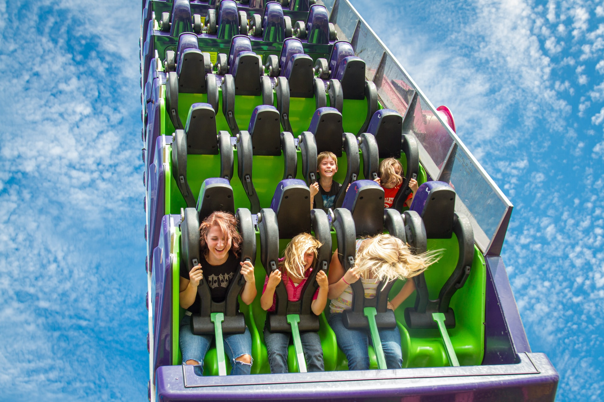

Roller Coaster Ride
A roller coaster is a type of amusement ride that employs a form of elevated railroad track designed with tight turns, steep slopes, and sometimes inversions.[1] People ride along the track in open cars, and the rides are often found in amusement parks and theme parks around the world.[1] LaMarcus Adna Thompson obtained one of the have to be a complete circuit, as shuttle roller coasters demonstrate. Most roller coasters have multiple cars in which passengers sit and are restrained.[4] Two or more cars hooked together are called a train. Some roller coasters, notably Wild Mouse roller coasters, run with single cars.
Ferris-Wheel
A Ferris wheel (or a big wheel in the United Kingdom) is an amusement ride consisting of a rotating upright wheel with multiple passenger-carrying components (commonly referred to as passenger cars, cabins, tubs, capsules, gondolas, or pods) with electric motors to independently rotate each car to keep it upright. These wheels are sometimes referred to as observation wheels and their cars referred to as capsules. However, these alternative names are also used for wheels with conventional gravity-oriented cars.

Water-Park
Austrian manufacturer Aquarena developed the world's first mass-produced fully inverted looping water slide, known as the AquaLoop.[2] The slide is currently licensed and distributed by Canadian water slide manufacturer WhiteWater West.[3] There are nearly 20 AquaLoop installations around the world.[4] The first installation was at Terme a 17-metre (56 ft) near-vertical descent at a speed of up to 60 kilometres per hour (37 mph). Riders experience 2.5 Gs in less than 2 seconds.[9] The whole ride is over within 7 seconds.[10]